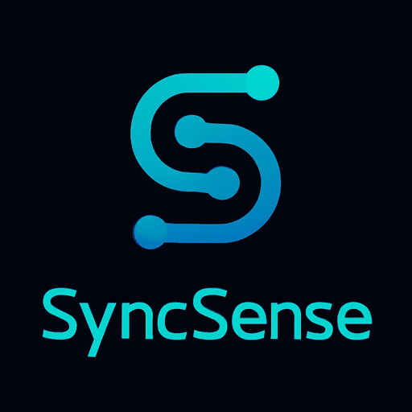

Approach document
A fixed-scope review of one data area that ends with a clear diagnosis, a prioritised roadmap and a working prototype on your own data.
Most organisations already hold the data they need. The problem is getting a reliable, current answer out of it: numbers are rebuilt by hand in spreadsheets, reports disagree, and a few people hold the knowledge that keeps reporting running.
A free, fixed-scope assessment of one data area (for example, finance reporting, sales performance or claims). We review sources, definitions and current reports, score readiness across people, process and technology, and build a working prototype on your data.
Four phases: Scope → Review → Prototype → Present. Read-only access only. One senior SyncSense architect leads from the first conversation to the final presentation.
An audit and gap analysis, a readiness scorecard, a prioritised modernisation roadmap, a working prototype and a business impact summary measured against your own baseline.
Nothing. The scope is fixed so that it can stay free, and there is no obligation to continue. You decide on next steps after the final presentation.
Six patterns we see most often when we review reporting. Each one has a different root cause, so each needs a different fix.
ERP, core systems, Tally, SaaS tools and spreadsheets each hold part of the picture, with no single place where they meet.
Monthly packs are rebuilt by hand. Every copy-paste is a chance for error, and the work repeats every cycle.
“Revenue” or “active customer” means different things in different teams, so meetings start by arguing about whose number is right.
One analyst or one macro keeps reporting alive. When that person is away, the report is late or wrong.
Dashboards answer the questions someone thought of months ago. Follow-up questions join an analytics backlog.
Proofs of concept look good on clean sample data, then stall on undocumented definitions, data quality and access rules.
Buying another tool rarely fixes these patterns on its own. The first step is an honest diagnosis of where the path from source to answer breaks, and why.
A short, evidence-based assessment on one data area, ending with a roadmap and a prototype you can try, before any larger investment.
How data flows from source systems to reports, where it is handled manually, and how mature the data area is across people, process and technology.
The root causes behind late, manual or conflicting numbers, traced to specific sources, definitions or steps.
A prioritised list of initiatives, sequenced by business value and effort, with quick wins separated from foundational work.
A working prototype on your data, so the future state is something you can try, not a slide you have to imagine.
Finance month-end pack · Sales and distributor performance · Insurance claims · Collections and receivables · Procurement and supplier performance · Plant and production reporting
| Activity | Led by | Wk 1a | Wk 1b | Wk 2a | Wk 2b | Wk 3a | Wk 3b |
|---|---|---|---|---|---|---|---|
| 1 · Scope | |||||||
| Kick-off; confirm area, questions and success criteria | Sponsor + SyncSense lead | ||||||
| Access, contacts and confidentiality agreed | IT contact | ||||||
| 2 · Review | |||||||
| Stakeholder interviews | SyncSense lead | ||||||
| Source, data quality and report review (read-only) | SyncSense analyst | ||||||
| Readiness scoring and gap analysis | SyncSense lead | ||||||
| 3 · Prototype | |||||||
| Model core entities and definitions; connect one source | SyncSense analyst | ||||||
| Answer priority questions; review with data owner | SyncSense + data owner | ||||||
| 4 · Present | |||||||
| Roadmap and business impact summary | SyncSense lead | ||||||
| Final presentation and live prototype demo | Sponsor + stakeholders | ||||||
We score the current state and agree a realistic target state with you. The gap between them drives the roadmap.
Reports built by hand from exports. Definitions live in people’s heads. Numbers often disagree.
Regular reports exist but depend on manual steps and key individuals. Some definitions written down.
Core sources integrated; agreed KPI definitions; scheduled refresh; basic data quality checks.
Single source of truth; governed access; quality monitored; business users self-serve routine questions.
Trusted, explainable answers in plain English; shared business model reused by reports and AI.
A review of current data workflows that identifies manual bottlenecks, Excel dependencies and single points of failure, with a readiness score for each of the nine dimensions.
A step-by-step plan to move from manual reporting to automated, current dashboards and plain-English questions, sequenced into quick wins, foundations and scale-up.
A prototype on your own data: usually AskData answering your priority questions, or a dashboard showing how your KPIs will look, with a log of which answers were verified.
Where time could be saved, where errors come from and what it would take to scale, measured against your own baseline rather than an industry benchmark.
Every finding is traceable to evidence: a source, a report, a definition or an interview. Every recommendation names what it fixes, the effort involved and who would own it. We do not quote accuracy figures before measuring them on your questions.
| Pillar | Dimension | Maturity (1–5) | Gap |
|---|---|---|---|
| People | Sponsorship and ownership | Low | |
| Skills and capacity | Medium | ||
| Data culture and adoption | Medium | ||
| Process | Definitions and business rules | High | |
| Data quality | Medium | ||
| Reporting workflow and controls | High | ||
| Technology | Sources and integration | Medium | |
| Storage and modelling | High | ||
| Analytics and AI tooling | Low |
Definitions, automated extracts, quality checks
Shared data model, governed access
Self-service and AI on the shared model
| Role | Responsibilities |
|---|---|
| Business sponsor | Chooses the data area and questions; attends kick-off and the final presentation; decides next steps. |
| Data owner | Knows the data and the reports; joins interviews; reviews prototype answers for correctness. |
| IT contact | Arranges read-only access or an extract; confirms security requirements. |
| Report users (2–4) | Short interviews on how reports are produced and used today. |
| Role | Responsibilities |
|---|---|
| Senior architect (lead) | Single point of contact from first call to final presentation; runs interviews, scoring and the roadmap. |
| Data and BI analyst | Reviews sources and data quality; builds the prototype and the accuracy log. |
| Product specialist (as needed) | Configures AskData, Ontology Studio or dashboards for the prototype. |
We work in your environment or on an extract you provide. Database accounts are read-only and limited to the tables the data area needs. We never change production systems.
We sign a confidentiality agreement if you need one before any data is shared. Data is used only for the assessment and is deleted or returned at the end.
Personal data can be masked or excluded. If the prototype uses AskData, the language model sees questions and table descriptions, not your rows. A self-hosted model is available where required.
For organisations in India, keeping personal data inside your own environment simplifies compliance with the Digital Personal Data Protection Act, 2023. We follow your internal security and access policies throughout.
Text-to-SQL agents on a 1.4 TB database; 5,000 client reports a month.
Agentic Text-to-SQL cut time-to-insight from 3–5 days to under 30 minutes.
AI legal intelligence for drafting and research on GST disputes.
A GenAI email assistant for a CRM product company’s support team.
Runs data freshness, scheduled reports, development and support.
Consolidated finance dashboards across many group companies.
Full case studies at www.syncsense.in/case-studies. Results are as reported for each engagement; your results depend on your data and scope.
Keep the report, scorecard and roadmap and deliver it with your own team. Many quick wins need no outside help.
Turn the prototype into a pilot on one real source, with success criteria agreed up front: accuracy, users, time to answer.
SyncSense delivers the roadmap: data warehouse or model, pipelines, dashboards and AI, from pilot to production.
Vetted data, BI and AI specialists join your team, or a managed team runs the function for you.
Tell us the data area you would like reviewed and your top questions. We will reply within one business day to arrange a short scoping call.
This document describes SyncSense’s standard approach. Scope, timing and deliverables for your assessment are confirmed in writing at scoping. Pages marked “Illustrative example” do not contain client data. © 2026 SyncSense. All rights reserved.